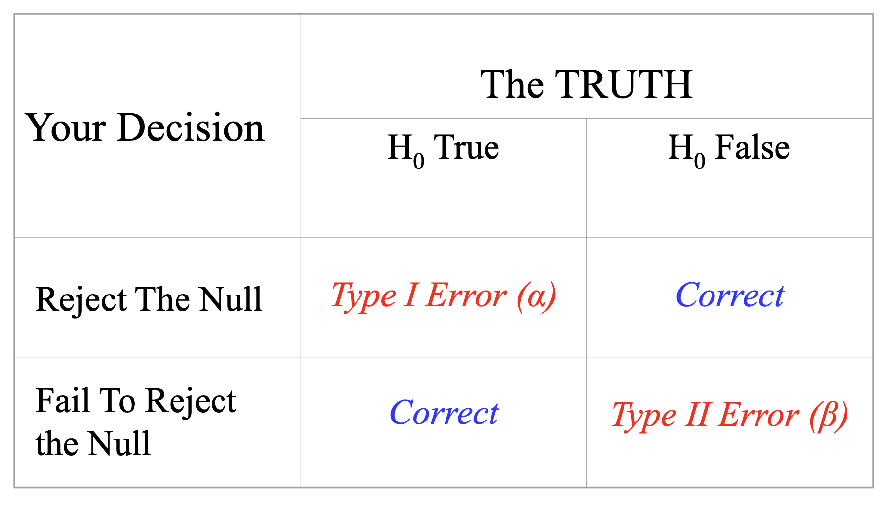
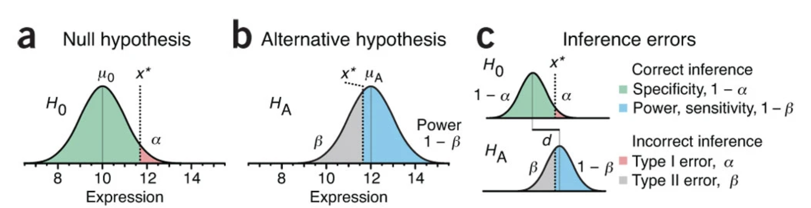
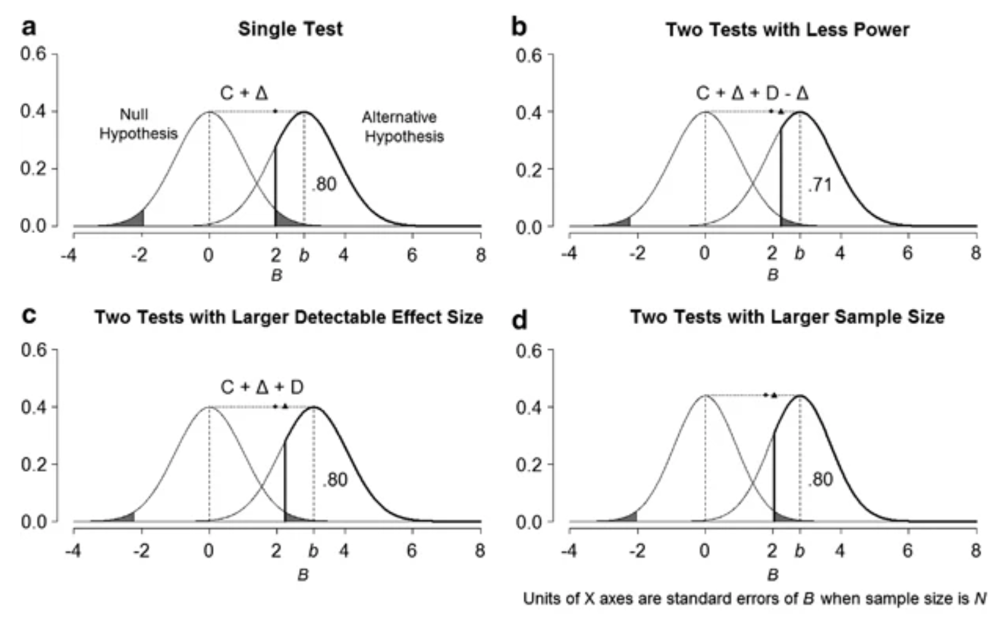

The probability of correctly rejecting the Null Hypothesis, which depends on
why multiple testing inevitably leads to some loss of power or the need for a compensatory increase in the detectable effect size and/or sample size?
Consider a hypothesis test based on a statistic B, such that the standardized z-statistic, \(Z = (B-b)/(s/\sqrt(N))\), where b is the expected value of B and is its standard error in a sample of size N.
if we want to test whether is expected value \(b = 0\). Set \(\alpha = 0.05\), the critical value \(C = 1.96\), we would rejected the null hypothesis if B is more than 1.96 standard errors from 0.
Set effect size \(b = 2.8\), which means in the alternative hypothesis, statistic B follows \(N(b,s/\sqrt(N))\), then we got 80% power (area under the bold curve on the rightside in Figure 1a).
When performing this test twice, or H=2, and we choose a conservative approach, Bonferroni adjustment, to correct for multiple testing.
This approach sets the per-test significance level to \(\alpha/H\), which guarantees for an experiment comprised of H tests, the probability of one or more false positives (known as the family-wise error rate) is no more than \(\alpha\). For \(\alpha = 0.05, H=2\), the Bonferroni critical value C is 2.24. This led to a power at 71% (area under the bold curve on the rightside in Figure 1b).
Thus, the cost of going from a single test with 80% power to two Bonferroni-adjusted tests is always a reduction of power to 71% if the initial effect size and sample size are maintained.
How to maintain the the original level of power? Either we have a larger detectable effect size (Figure 1c), or increase the sample size. A larger detectable effect size means the statistic’s distribution under the alternative hypothesis shifted to the rightside. Increasing sample size would narrow the widths of both the null and alternative curves accordingly (Figure 1d).

Figure 1, power analysis, figure source: https://www.nature.com/articles/mp2010117#citeas